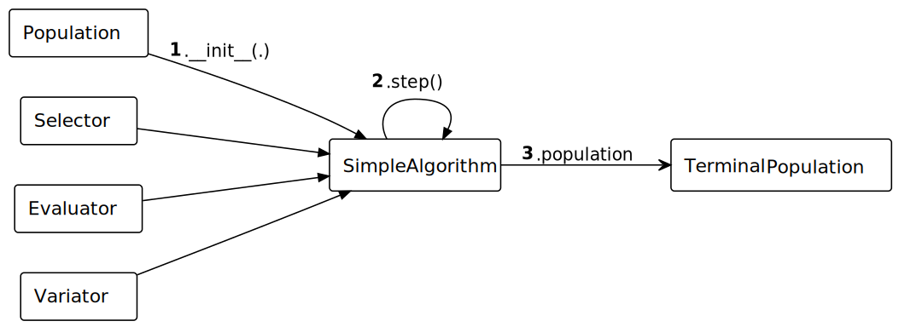

Making a Custom Algorithm
In EvoKit, an algorithm combines operators to perform the training process.
This example defines an \((\mu+\lambda)\) algorithm that maintains one population and accepts one set operators (including one evaluator, one selector, and one variator). These characteristics can be customised.

See the following table for guides on how to define individual operators:
Component |
Guide |
|---|---|
|
|
|
|
|
|
|
Manual Selection
The algorithm automates the training of evolutionary algorithms. To understand the process, it is best to train an algorithm by hand.
Skip to Designing the Algorithm for how an algorithm is defined.
Initialise Population
The evolutionary process acts not on individuals, but populations.
To begin, create the initial Population of bit string representations. Check that the individuals are correctly initialised. A population in EvoKit essentially behaves like a list.
[23]:
from evokit.core import Population
from evokit.evolvables.binstring import BinaryString
[24]:
pop : Population[BinaryString] = Population[BinaryString]()
pop.append(BinaryString(int('11111', 2), 5))
pop.append(BinaryString(int('11110', 2), 5))
pop.append(BinaryString(int('11100', 2), 5))
print(pop)
['[1, 1, 1, 1, 1]', '[1, 1, 1, 1, 0]', '[1, 1, 1, 0, 0]']
The .fitness attribute of an individual stores its fitness. For new individuals, this attribute is uninitialised and accessing it raises an error.
To check if the .fitness is initialised, call .has_fitness.
[25]:
try:
pop[0].fitness
except ValueError as e:
print(f"An {type(e).__name__} is raised, with message \"{e}\"")
print(f"It is _{pop[0].has_fitness()}_ that the fitness of `pop[0]` is defined.")
An ValueError is raised, with message "Fitness is accessed but null.
Call `.has_fitness` to check if the fitness is defined."
It is _False_ that the fitness of `pop[0]` is defined.
Variate
A variator creates new individuals (offspring) from existing individuals. A mutator, in particular, is a variator that uses only one parent. All variators in EvoKit must ensure that operations performed on offspring do not affect the parent.
The canonical mutator (MutateBits) for bit strings flips each digit with probability mutation_rate. Applying the mutator to the population creates a new population.
[26]:
from evokit.evolvables.binstring import MutateBits
variator = MutateBits(mutation_rate=0.1)
offspring = variator.vary_population(pop)
print (f"Parent: {pop}")
print (f"Offspring: {offspring}")
Parent: ['[1, 1, 1, 1, 1]', '[1, 1, 1, 1, 0]', '[1, 1, 1, 0, 0]']
Offspring: ['[1, 1, 1, 1, 1]', '[1, 1, 1, 1, 0]', '[0, 1, 1, 0, 1]']
Evaluate
The evaluator assigns to the .fitness of all individuals in a population.
Evaluation sets the stage for selection. Consider which population the algorithm selects from: using \((\mu+\lambda)\), offspring competes with parents for selection. To implement this, call Population.join to create a population that includes individuals from pop and offspring.
[27]:
joined_pool = pop.join(offspring)
The canonical evaluator (CountBits) for bit strings sums all digits in the string. Once the evaluator is initialised, call .evaluate_population with the population as argument. Check that all individuals in the population are correctly evaluated.
Note: unlike its counterparts Variator.vary_population and Selector.select_population, .evaluate_population does not return a value but rather modifies an attribute of its argument. To prevent any misunderstanding, .evaluate_population explicitly returns None.
[28]:
from evokit.evolvables.binstring import CountBits
CountBits().evaluate_population(joined_pool)
for individual in joined_pool:
print(f"Fitness of {individual} is {individual.fitness}")
Fitness of [1, 1, 1, 1, 1] is (5,)
Fitness of [1, 1, 1, 1, 0] is (4,)
Fitness of [1, 1, 1, 0, 0] is (3,)
Fitness of [1, 1, 1, 1, 1] is (5,)
Fitness of [1, 1, 1, 1, 0] is (4,)
Fitness of [0, 1, 1, 0, 1] is (3,)
Select
A selector selects from a Population into a strict subset. The TruncationSelector, in particular, selects individuals with the highest .fitness.
[29]:
from evokit.evolvables.selectors import TruncationSelector
new_pop = TruncationSelector(budget=3).select_population(joined_pool)
print(f"From {joined_pool}, the truncation selector\n"
f" selects {new_pop}.")
From ['[1, 1, 1, 1, 1]', '[1, 1, 1, 1, 0]', '[1, 1, 1, 0, 0]', '[1, 1, 1, 1, 1]', '[1, 1, 1, 1, 0]', '[0, 1, 1, 0, 1]'], the truncation selector
selects ['[1, 1, 1, 1, 0]', '[1, 1, 1, 1, 1]', '[1, 1, 1, 1, 1]'].
Designing the Algorithm
Time to automate! To implement a custom algorithm, extend Algorithm and override at least two of its methods:
.__init__initialises parameters of the algorithm itself. In this example, it accepts the initial population and a minimal set of operators..stepperforms one iteration.
[30]:
from evokit.core import Algorithm
from typing import override
from evokit.core import Evaluator, Selector, Variator
class SimpleMuPlusLambda(Algorithm):
@override
def __init__(self,
population: Population[BinaryString],
evaluator: Evaluator[BinaryString],
selector: Selector[BinaryString],
variator: Variator[BinaryString]) -> None:
self.population = population
self.evaluator = evaluator
self.selector = selector
self.variator = variator
@override
def step(self) -> None:
self.population = self.population.join(
self.variator.vary_population(self.population))
self.evaluator.evaluate_population(self.population)
self.population = \
self.selector.select_population(self.population)
The creation of individuals can also be automated. For example, BinaryString.random creates random binary strings of a given length. Take advantage of this to create a initial population.
[31]:
another_pop = Population(*(BinaryString.random(size=5)
for _ in range(3)))
print(f"Initial population: {another_pop}")
Initial population: ['[1, 0, 0, 1, 1]', '[1, 0, 0, 0, 1]', '[0, 1, 1, 1, 0]']
Initialise an algorithm with another_pop as its initial population, using operators mentioned above.
[32]:
ctrl = SimpleMuPlusLambda(another_pop,
CountBits(),
TruncationSelector(budget=3),
MutateBits(mutation_rate=0.1))
Run the algorithm. Observe an increase in fitness across generations: the algorithm runs correctly!
[33]:
for _ in range (10):
ctrl.step()
print(f"Current population: {ctrl.population}")
print(f"Current fitnesses: {[ind.fitness for ind in ctrl.population]}")
Current population: ['[1, 0, 0, 1, 1]', '[0, 1, 1, 1, 0]', '[1, 1, 1, 1, 1]']
Current fitnesses: [(3,), (3,), (5,)]
Current population: ['[0, 1, 1, 1, 1]', '[1, 1, 1, 0, 1]', '[1, 1, 1, 1, 1]']
Current fitnesses: [(4,), (4,), (5,)]
Current population: ['[1, 1, 1, 0, 1]', '[1, 1, 1, 1, 1]', '[1, 1, 1, 1, 1]']
Current fitnesses: [(4,), (5,), (5,)]
Current population: ['[1, 1, 1, 1, 1]', '[1, 1, 1, 1, 1]', '[1, 1, 1, 1, 1]']
Current fitnesses: [(5,), (5,), (5,)]
Current population: ['[1, 1, 1, 1, 1]', '[1, 1, 1, 1, 1]', '[1, 1, 1, 1, 1]']
Current fitnesses: [(5,), (5,), (5,)]
Current population: ['[1, 1, 1, 1, 1]', '[1, 1, 1, 1, 1]', '[1, 1, 1, 1, 1]']
Current fitnesses: [(5,), (5,), (5,)]
Current population: ['[1, 1, 1, 1, 1]', '[1, 1, 1, 1, 1]', '[1, 1, 1, 1, 1]']
Current fitnesses: [(5,), (5,), (5,)]
Current population: ['[1, 1, 1, 1, 1]', '[1, 1, 1, 1, 1]', '[1, 1, 1, 1, 1]']
Current fitnesses: [(5,), (5,), (5,)]
Current population: ['[1, 1, 1, 1, 1]', '[1, 1, 1, 1, 1]', '[1, 1, 1, 1, 1]']
Current fitnesses: [(5,), (5,), (5,)]
Current population: ['[1, 1, 1, 1, 1]', '[1, 1, 1, 1, 1]', '[1, 1, 1, 1, 1]']
Current fitnesses: [(5,), (5,), (5,)]